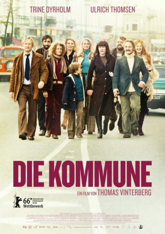

#10085 Die Kommune
 
 IMDB-Wertung: 6.4 / 10
IMDB-Wertung: 6.4 / 10  Metascore: 60
Metascore: 60 
„Ein kleines Haus hält unseren Geist klein“, findet die Fernsehsprecherin Anna. Sie überzeugt ihren Mann Erik, einen Architekturdozenten um die fünfzig, in seiner frisch geerbten Villa mit Tochter Freja und ein paar Bekannten eine Kommune zu gründen. Fortan bestimmen sie gemeinsam die Grundregeln des Zusammenlebens, essen, feiern und streiten miteinander. Die Realisierung von Annas Traum scheint perfekt. Doch dann beginnt Erik eine Affäre mit einer seiner Studentinnen. Und Anna schlägt das Ungeheuerliche vor: Auch für die schöne Emma soll Platz in der Kommune sein
Jahr: 2016
Dauer: 112 Minuten
FSK: 12
Land: Dänemark Studio: EuroVideoTonspuren:
Untertitel:
Auflösung: 720p (1280x544) Größe: 2539 MB
Genre: Drama
Regisseur: Thomas Vinterberg
Drehbuch: Tobias Lindholm, Mogens Rukov, Thomas Vinterberg, Thomas Vinterberg
Soundtrack: Fons Merkies
Darsteller:
 Fares Fares als Allon
Fares Fares als Allon Ulrich Thomsen als Erik
Ulrich Thomsen als Erik Trine Dyrholm als Anna
Trine Dyrholm als Anna Ole Dupont als Elegant Gentleman
Ole Dupont als Elegant Gentleman- Magnus Millang als Steffen
- Julie Agnete Vang als Mona
- Mads Reuther als Jesper
- Adam Fischer als Architect Student
- Lars Ranthe als Ole
- Helene Reingaard Neumann als Emma
- Lise Koefoed als Make-up artist
- Ulver Skuli Abildgaard als Preben
- Martha Sofie Wallstrøm Hansen als Freja
- Morten Rose als Editorial employee
- Anne Gry Henningsen als Ditte
- Jacob Højlev Jørgensen als The lawyer
- Rasmus Lind Rubin als Peter
- Oliver Methling Søndergaard als Johannes
- Mikael Kærsgaard als Guitarist
- Claus Sprotte Kofod als Student
- Jytte Kvinesdal als Kirsten, DR employee
- Sebastian Grønnegaard Milbrat als Vilads
- Sigga Eythorsdottir als Choirleader
- Jesper Hyllegaard als DR Chef
- Ida Maria Vinterberg als Frejas friend
- Henrik Strube als Older man
- Erling Agergaard als DR stage manager (uncredited)
- Morten Feldt als DR Technician (uncredited)
Datei: X:\2016(G-M)\Kommune, Die (2016, FSK12, 1280x544).mkv seit 28.11.2018
Festplatte: HD 2016(A-Z)
 Es gibt insgesamt 164 Filme in der Gruppe '2016(G-M)'
Es gibt insgesamt 164 Filme in der Gruppe '2016(G-M)'